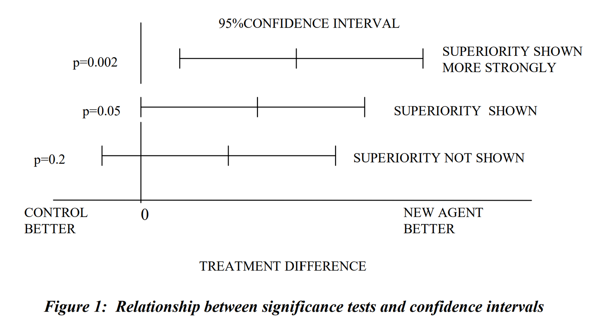
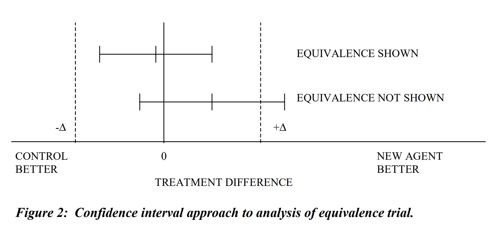
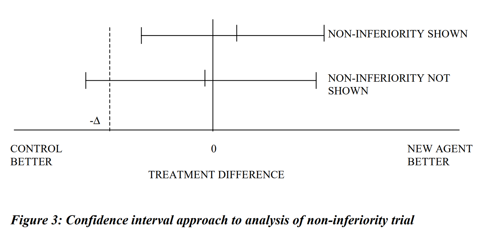
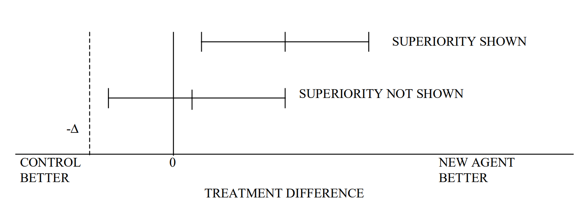
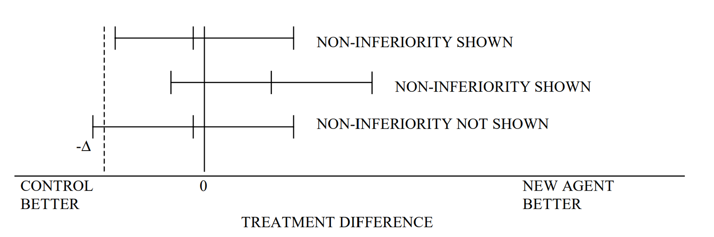

Points to Consider on Switching between Superiority and Non-inferiority#
I. Introduction#
시험군(신약) VS 대조군(활성 대조군) 비교 유형#
신약의 우월성(superiority)
신약의 비열등성(non-inferioriy)
두 군의 동등성(equivalence)
유형 간 전환#
우월성 평가시험 → 비열등성
비열등성 평가시험 → 우월성
동등성 평가시험 → 더 좁은 구간의 동등성
본 문서의 설정#
단일 일차 평가변수를 사용하는 유효성 시험 관점
우월성, 비열등성, 동등성 문제
시험 목적(우월성/비열등성/동등성)을 변경해도 일차 평가변수의 정의는 변경되지 않는다고 가정
II. Trial Objectives#
비교 목적 유형 |
Superiority trial |
Equivalence trial |
Non-inferiority trial |
|---|---|---|---|
목적 |
신약 치료군과 대조약 치료군 간 임상적 효과의 차이를 확인 |
신약 치료군과 대조약 치료군 간 임상적 효과에 유의한 차이가 없음을 확인 |
주로 3상 임상시험에서 신약이 표준 치료보다 효과가 작지 않음을 확인 (동등하거나 비슷한 효과가 있음) |
유의성 검정 |
p-value 확인 |
p-value가 작을수록 차이가 크다
두 평균은 5% 유의 수준(p<0.05)에서 유의하게 다르다. | 신뢰구간 주로 사용 | 열등성 확인 시 사용 | | 신뢰 구간 및 허용 한계(Δ) | - 효과 차이에 대한 95% 양측 신뢰 구간은 0을 포함하지 않는다.
허용 한계(Δ) 없음 → 통계적 유의성이 있더라고 임상적 유의성이 없을 수 있다. (우월성 임상시험에서 검정력을 계산하는 것도 임상적 유의성을 나타내지 않을 수 있기 때문에 중요하지 않을 수 있다.) | - 효과 차이에 대한 95% 양측 신뢰 구간은 -Δ~+Δ 사이에 있어야 한다. (동등성 마진은 0에 대해 비대칭적일 수도 있다) | - 효과 차이에 대한 95% 양측 신뢰 구간이 -Δ의 오른쪽에 있어야 한다. |
도식비교#
신뢰구간: 95% 양측 신뢰 구간
왼쪽: 대조군의 효과가 높음 / 오른쪽: 치료군의 효과가 높음 (μT−μC)
Δ: 임상적으로 허용 가능한 가장 큰 차이값



III. Relevance of Pre-definition#
사전 정의가 필요한 이유#
대조군의 치료법, 용량, 대상자, 평가변수가 적절한지 확인하기 위하여
적절한 검정력 계산에 의거한 표본 크기 추정을 위하여
동등성 및 비열등성의 기준이 사전 정의되었는지 확인하기 위하여
프로토콜에 적절한 분석 계획이 기술되었음을 확인하기 위하여
시험이 시험 목적을 달성하기에 충분한 민감도(sensitivity)를 가지고 있는지 확인하기 위하여
IV. Switching the Objective of the Comparison#
IV.1 Interpreting a non-inferiority trial as a superiority trial#
통계적으로 a simple closed test procedure(단순한 닫힌 검정 절차)에 해당하기 때문에 통계적 다중성(statistical muliplicity)에 문제가 없다.
다중성 문제란 동일한 데이터로 여러 개의 가설을 동시에 검정하는 경우 발생할 수 있는 문제로 이를 해결하기 위한 통계적 절차 중 하나가 Simple closed test procedure이다. 다양한 유의수준에 대해 가설 검정을 하여 오류가 낮출 수 있도록 유의 수준을 조정하는 것. (?)
다만, 이상 사례의 증가로 신약 치료군과 대조약 치료군 간의 안전성 정보에 차이가 있다면 유효성이 안전성 문제 보다 효과의 크기가 큰지 평가하는 것이 중요하다.

IV.1.1 Appropriateness of Comparator#
대조군이 치료의 유효성을 보여주기 위해
잘 통제되어야 한다.
‘대조군에 대한 우월성’에 대한 개념이 통계적 유의성 측면에서 명확하게 정의되어야 한다.
IV.1.2 Power calculation#
비열등성시험은 신약의 약간의 열등성의 가능성이라도 배제하기 위해 큰 규모로 진행된다.
신약이 약간이라도 대조군보다 우월한 경우, 비열등성 시험의 검정력은 증가한다.
실제로 더 큰 규모의 임상시험 계획이 필요할 수도 있다.
그러나 임상시험이 완료되면 신뢰구간에 의한 시험의 결과는 어떠한 검정력 계산이라도 대체할 수 있을 만큼 정밀한 결과가 도출된다.
IV.1.3 Size of additional clinical benefit#
비열등성 시험의 대조군은 유효성이 확인된 약제로 선정되기 때문에 대조군보다 우월한 약제은 플라시보(무치료)에 비해서는 우월하다는 것을 의미한다.
신약의 우월성 → 플라시보(무치료)<활성 대조군<신약
따라서 이상반응 등 Risk가 큰 경우를 제외하면 추가적인 Benfit에 대해 정의할 필요가 없다.
그러나 대조군의 우월성을 나타내는 proposed license가 있다면 임상적 용어로 추가적인 임상적 Benefit에 대해 논의되어야 한다.
IV.1.4 Choice of analysis set#
우월성 시험: **ITT(intention-to-treat) 원칙에 따른 FAS(full analysis set)**에 PP(per protocol)를 부수적으로 사용
비열등성 시험: FAS와 PP의 중요도를 동등하게 설정, 비슷한 결론이 나오는지 확인하여 타당성 평가
비교 목적을 전환하는 경우 이러한 상대적인 중요도를 고려해야한다.
IV.1.5 Trial quality#
동등성이나 비열등성을 나타내는 임상시험은 프로토콜의 계획에 높은 수준으로 일치해야 한다.
프로토콜 위반(약물 투여 방법, 선정 기준, 측정 방법 등)은 임상시험의 민감도를 감소시키며 차이가 없다는 결론을 나타낸다는 경향성이 있다.
이러한 프로토콜 위반과 관련된 Bias의 크기를 측정하는 방법은 알려져있지 않고, 임상시험 해석을 불가능하게 만들 수도 있다.
두 치료군이 효과가 없는 경우(부적절한 처방 등의 이유로)에도 차이를 입증하지 못할 수 있다.
우월성 시험에서는 우월성(차이)가 입증되면 민감도가 동시에 입증된다.
이러한 이유로 비열등성에서 우월성으로 전환하는 것은 결론에 대한 신뢰도를 높일 수 있다.
IV.1.6 Conclusion#
다음의 경우 비열등성 시험에서 열등성 시험으로 전환하는 것이 가능하다.
임상시험이 적절히 설계되었고, 비열등성 시험 요구 조건을 엄격히 따르는 경우
p-value가 우월성에 대한 근거를 독립적으로 평가할 수 있도록 제시되는 경우
ITT원칙에 따른 분석에 중요도를 높게 둔 경우
IV.2 Interpreting a superiority trial as a non-inferiority trial#
우월성 임상시험에서 치료군 간의 유의한 차이가 없음 → 비열등성 시험
우월성 시험일지라도 -Δ를 프로토콜에 사전에 정의해두면 나중에 -Δ를 설정해야하는 어려움(객관적인 근거 부족 등)을 피할 수 있다.
약물 효과를 확인하기에 충분한 민감성이 있는지 미리 설계시에 관심을 가지는 것이 좋다.
비열등성 시험에서는 활성 대조군이 유효성에 대한 근거로 적절하지 않아 플라시보를 이용하는 경우가 있다는 점을 알아야 한다.
우월성에서 비열등성 시험으로의 전환이 통계적 다중성(statistical multiplicity) 문제 자체는 없어 보여도 Δ의 사후정의와 관련된 어려움이 있다.

IV.2.1 Appropriateness of comparator, doses, patient population and endpoints#
우월성 시험에서 정의된 대조군은 비열등성 시험의 결과에 적절하지 않을 수 있다.
따라서 대조군이 재현 가능한 효과가 있는 유효한 치료제라는 일관된 증거를 보여주고 치료하지 않는 것보다 유효하다는 것이 입증된 고도로 통제된 우월성 시험의 데이터가 있는지 확인해야 한다.
현재 임상시험에서도 동일한 효과가 있을 것으로 예상하는 합리적인 근거가 있어야 한다.
예를 들어, 환자 모집단과 평가변수가 비슷해야 한다.
IV.2.2 Power calculation#
신뢰구간에 의한 결과는 시험 전 수행된 검정력 계산을 대체할 수 있을만큼 명확하다.
비열등성 시험에서 합의된 기준에 따른 신뢰구간의 하한치 비열등성 판단에 중요한 영향을 미친다.
IV.2.3 Choice of analysis set#
우월성 시험: ITT(intention-to-treat) 원칙에 따른 FAS(full analysis set)에 PP(per protocol)를 부수적으로 사용
비열등성 시험: FAS와 PP의 중요도를 동등하게 설정, 비슷한 결론이 나오는지 확인하여 타당성 평가
비교 목적을 전환하는 경우 이러한 상대적인 중요도를 고려해야한다.
IV.2.4 Trial quality#
동등성이나 비열등성을 나타내는 임상시험은 프로토콜의 계획에 높은 수준으로 일치해야 한다.
프로토콜 위반(약물 투여 방법, 선정 기준, 측정 방법 등)은 임상시험의 민감도를 감소시키며 차이가 없다는 결론을 나타낸다는 경향성이 있다.
이러한 프로토콜 위반과 관련된 Bias의 크기를 측정하는 방법은 알려져있지 않고, 임상시험 해석을 불가능하게 만들 수도 있다.
두 치료군이 효과가 없는 경우(부적절한 처방 등의 이유로)에도 차이를 입증하지 못할 수 있다.
우월성 시험에서는 우월성(차이)가 입증되면 민감도가 동시에 입증된다.
이러한 이유로 우월성에서 비열등성으로 전환하는 것은 결론에 대한 신뢰도가 떨어질 가능성이 높다.
따라서 시험의 민감성을 입증하기 위해 아래에 주의를 기울여야 한다.
직접 또는 간접적으로 대조군 치료법이 유효성을 입증할 증거를 찾을 것
대조군의 유효성을 입증한 선행 연구와 비교할 것
특히 이전 임상시험과 비교할 수 있는 환자 및 데이터의 부적합 수준과 손실 수준을 입증할 것
FAS군과 PP군의 결과가 유사함을 보여줄 것
IV.2.5 Conclusion#
다음의 경우 비열등성 시험에서 열등성 시험으로 전환하는 것이 가능하다.
비열등성 마진(-∆)가 사전 정의되거나 사후에 정당화 된 경우(후자의 경우 일반적으로 인정된 값이 있는 경우에 한정)
열등성에 대한 귀무 가설에 대한 신뢰구간과 유의 수준을 보여주는 ITT원칙에 따른 분석과 PP 분석군은 유사한 결과를 제공하는 경우
시험은 비열등성 시험의 요구 조건을 엄격히 준수하여 설계된 경우
시험의 민감도가 차이가 있는 경우 차이가 있다고 판단하기에 충분히 큰 경우
대조군의 유효성을 나타내는 직간접적 근거가 있는 경우
V. Changing the Equivalence Margins#
동등성 시험에서 시험 결과에 따른 신뢰 구간은 결과를 잘 요약한 것이다. 동등성 마진을 설정하는 것은 Bias의 영향을 받기 쉽기 때문에 측정된 데이터가 아닌 외부 정보(ex. regulatory requirement)를 근거로 선택되어야만 한다.
VI. Discussion#
이 문서는 단일 일차 변수의 활성 대조군에 대한 유효성 임상시험의 관점에서 쓰여졌다. 실제 연구에서는 하나 이상의 일차 변수를 사용하고 대부분의 연구에서 이차 평가변수를 사용한다. 대조군 비교 목적 전환 시 각각의 변수는 우월성과 비열등성에 대해 각각의 결론을 도출하게 된다.
이 문서의 개념은 특정 안전성 평가변수에 대해서도 사전 정의된 활성 대조군에 대한 주요 평가변수라면 동일하게 적용된다.
플라시보에 대한 비열등성이 안전성 평가 변수에 대해 중요한 자료라 할지라도, 실제로 비교 목적 변환의 문제는 플라시보 임상시험과 관련이 없다.
비열등성과 우월성이 모두 잠재적 값에 대한 결과라는 것을 알고 시험을 전향적으로 설계함으로써 목표를 전환하지 않아야 한다. 특히 통계적 분석은 순차적인 절차에 따라 비열등성에서 우월성으로 진행되어야 한다.
VII. Overall Conclusion#
우월성 시험을 비열등성 시험으로 해석하거나 그 반대로 해석하는 것은 시험 결과를 시험군과 대조군 간의 차이에 대한 신뢰 구간으로 접근하는 것이 가장 좋다. 이 신뢰구간을 두 경우에 사용할 때에 근본적인 문제는 없다. 잘 설계되고 시행된 시험의 경우, 비열등성에서 우월성으로 전환 시 어려움이 거의 없다. 그러나 결과 우월성에서 비열등성으로 전환하는 경우 마진을 설정하고 이에 대한 근거를 마련해야 한다는 어려움이 있다.
해석 단계에서 마진에 대한 대안과 관련하여 결론을 검토할 때, 동등성 마진이 더 넓은 범위로 변경되어야 하면 문제가 생길 수 있지만 더 좁은 동등성 마진을 만족하는 데이터는 안전하게 해석될 수 있다.